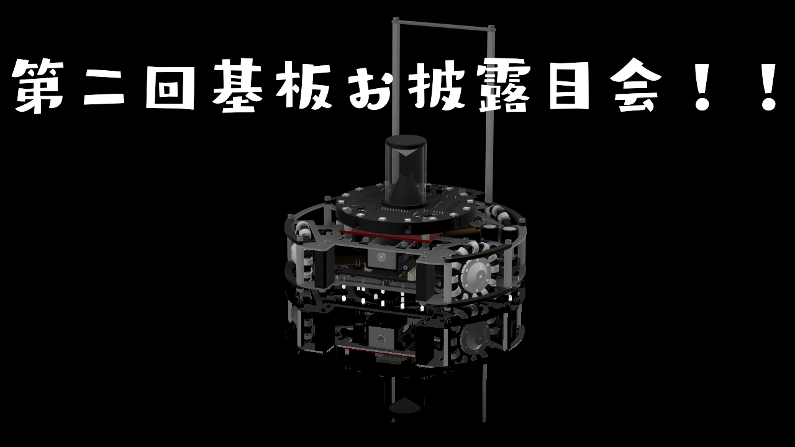
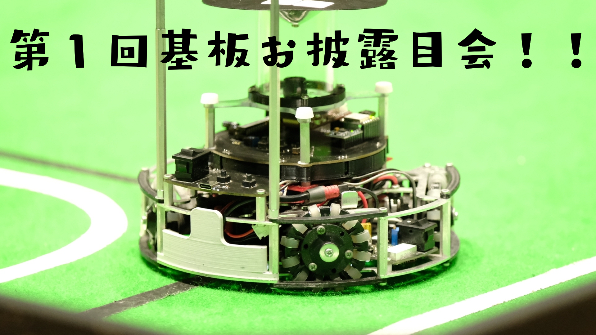
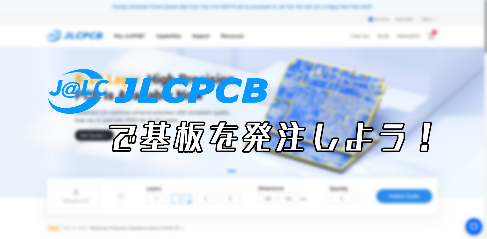
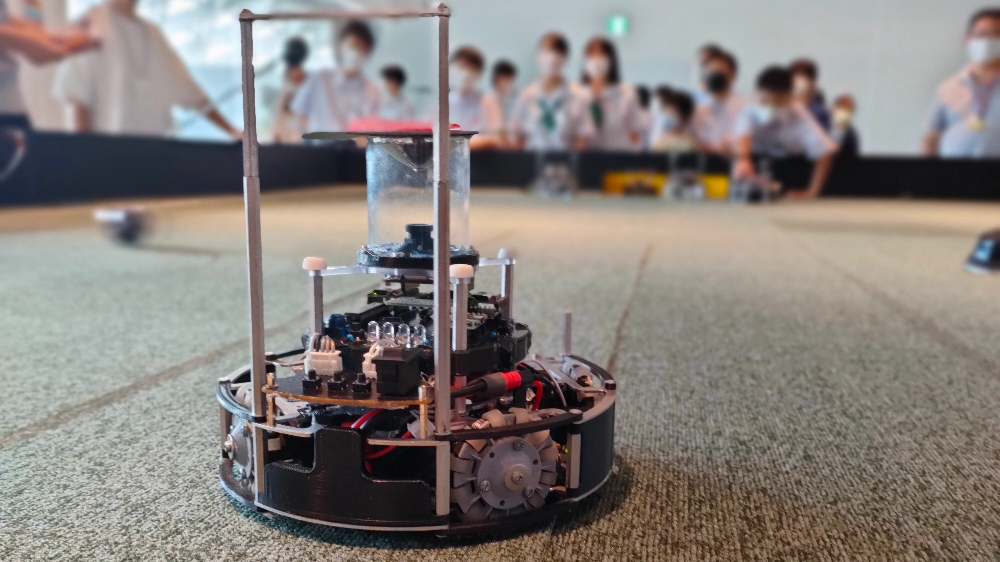

Blogs
-

公開:2023/07/15 更新:2023/07/15
第三回基板お披露目会
全国大会機に使用した基板の紹介です！
-
公開:2023/07/13 更新:2023/07/13
他人に依存しないチームにするために
チーム運営をしていく上でやってきたことについてたらたらと記事にまとめました。
-

公開:2023/02/27 更新:2023/02/27
第二回基盤お披露目会！!
キッカー試作機の基板の紹介をします！
-

公開:2023/02/26 更新:2023/02/26
第一回基盤お披露目会！!
福岡ノード、九州ブロックで出したロボットに使用した基板を紹介します！
-

公開:2022/12/30 更新:2022/12/30
JLCPCBで基板を発注してみよう！
JLCPCBで基板を発注する方法を解説していきます！
-
公開:2022/11/27 更新:2022/11/27
ロボチャレ2023 in 福岡 参戦！！
11月26日に行われたロボチャレンジ大会に参加しました！
-

公開:2022/08/09 更新:2022/08/09
MPU6050をSeeeduino Xiaoで動かしてみた
ライブラリ「MPU6050」を使い、Seeeduino XiaoでMPU6050を動かしました。
-

公開:2022/08/08 更新:2022/08/08
2022 北九州オープン 振り返り
2022年8月6‣7日に行われた北九州オープンの振り返りについて書いています。
-

公開:2022/08/02 更新:2022/08/03
初めてウェブサイトを作ってみたという話
ウェブサイトの作成経験0の人がウェブサイトを作った感想とかを書いてます。